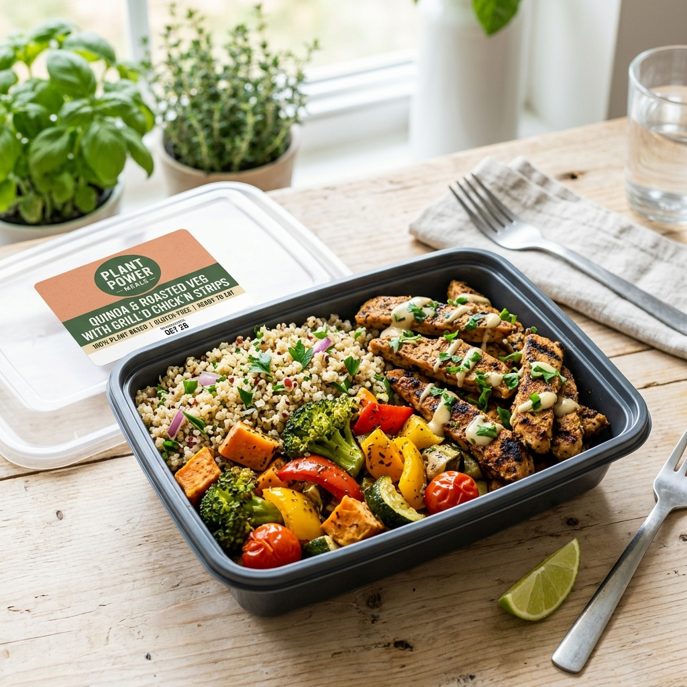
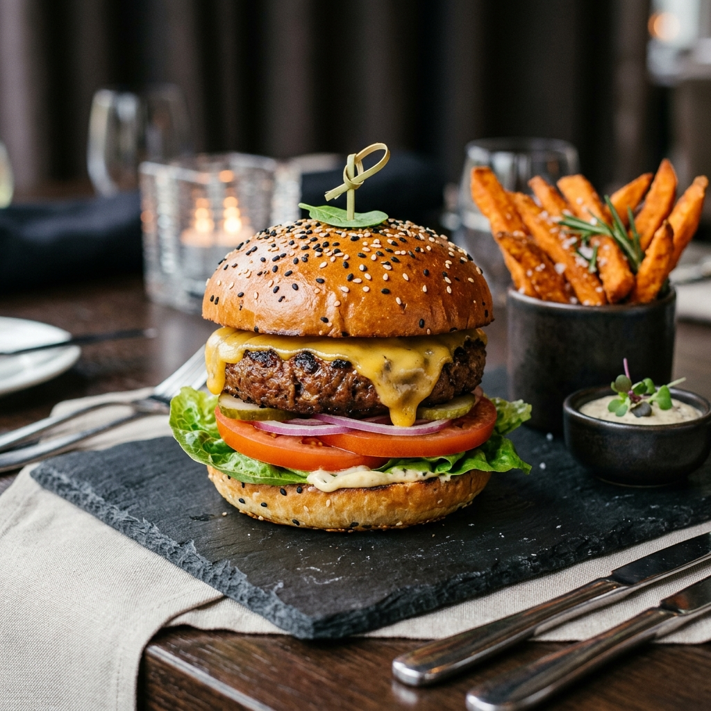

RECOMMENDED FOR YOU
Step-by-Step Gourmet Guides
Try these popular creations in your kitchen. Every recipe is meticulously measured and tested for culinary satisfaction.

High Protein Breakfast
Sausage Scramble Bowl
A spicy, high-protein breakfast scramble containing sliced sausage crumbles, avocado wedges, saut?ed peppers, and fresh greens.
20 Mins
18g Protein

Midday Fuel
Savory Mince Tacos
Slow-cooked seasoned plant-based mince nested in warm corn shells, topped with lime crema, fresh cilantro leaves, and pickled red onions.
15 Mins
22g Protein

Dinner Entree
Gourmet Sausage Roll Platters
Flaky vegan pastry wraps containing fennel-spiced sausage filling, baked until golden brown and served alongside mustard reduction dip.
30 Mins
16g Protein